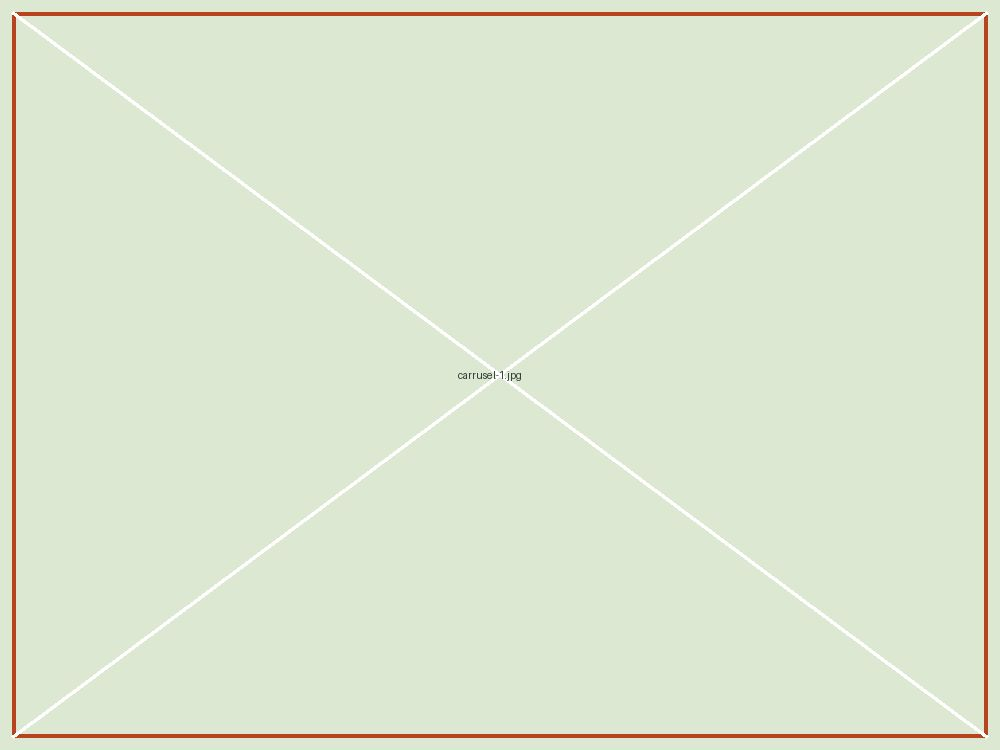
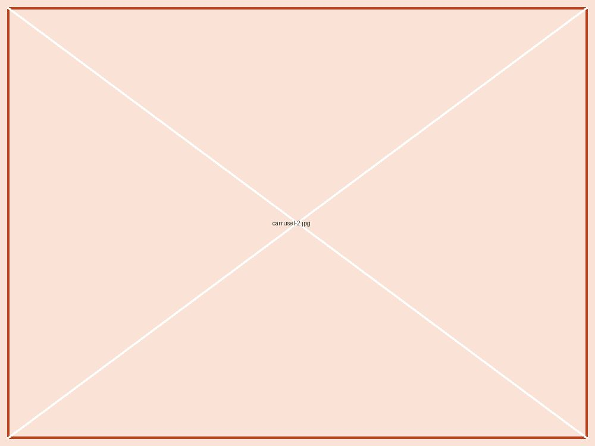
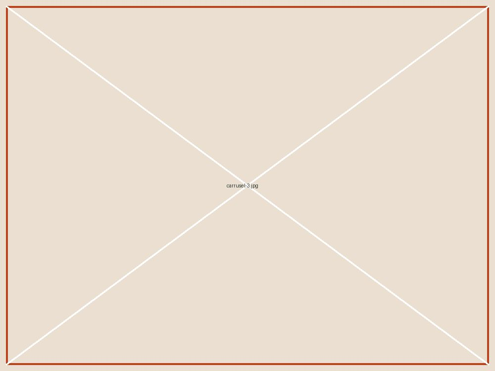
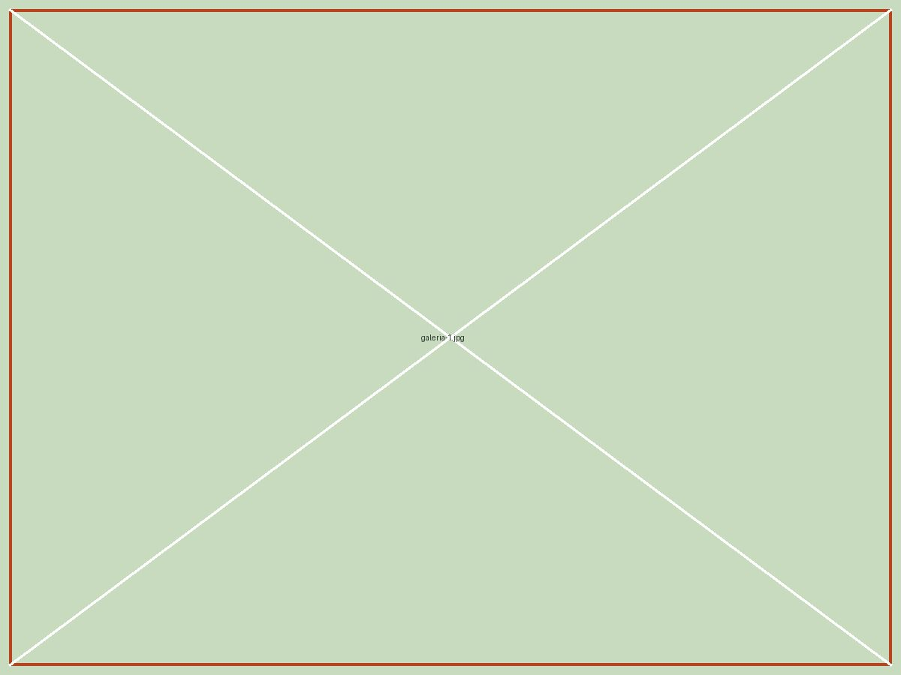
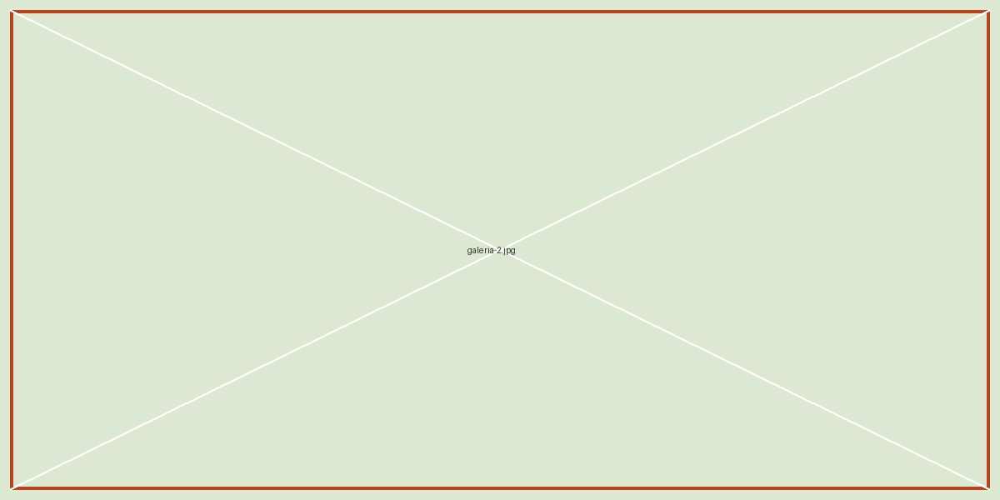
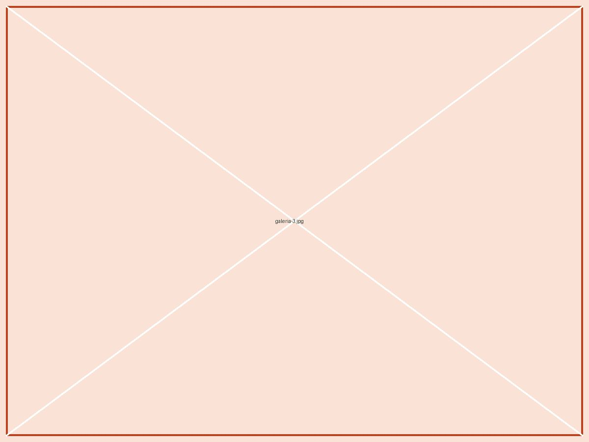
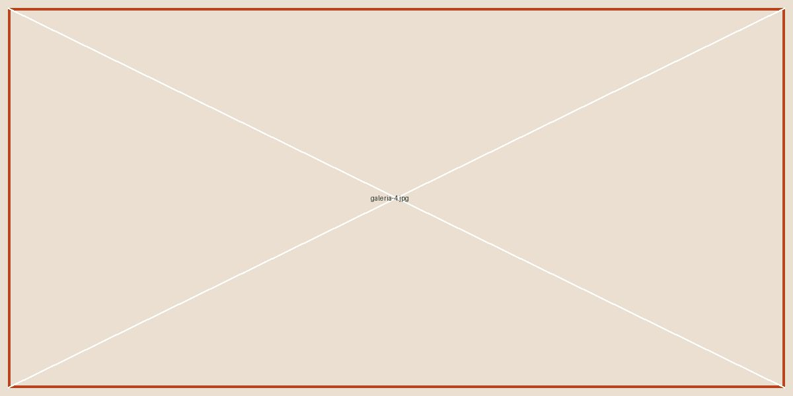

POSTALES DEL REFUGIO
Cada día, un poquito más felices.

Un paseo. Mil cosas por descubrir.

El cariño también cuida.

Aquí nadie camina solo.
UNA SEGUNDA OPORTUNIDAD
Cuidar es el primer paso. Encontrar hogar, el siguiente.
Somos una fundación de rescate animal. Escuchamos lo que cada uno necesita y buscamos familias que quieran acompañarlos a su ritmo.
Rescatamos
Un lugar seguro para volver a confiar.
Cuidamos
Atención veterinaria y cariño diario.
Acompañamos
Conocemos su carácter y sus tiempos.
Conectamos
Familias y animales que encajan.
CUANDO LLEGAN A CASA
Ellos lo cuentan mejor.
«No necesitaba una casa perfecta. Necesitaba la nuestra. Ahora no imaginamos el sofá sin él.»
Clara y Dani · familia de Bruno«Nos ayudaron a entender sus tiempos. El día que se durmió a nuestro lado, supimos que ya estaba en casa.»
Lucía · familia de CocoTestimonios de ejemplo para esta maqueta.
NUESTRA MISIÓN
Devolverles la confianza.
Rescatar y cuidar animales en situación de vulnerabilidad, promoviendo adopciones responsables y un trato digno.
NUESTRA VISIÓN
Un futuro sin abandono.
Una comunidad donde cada animal tenga un hogar seguro y donde el respeto se aprenda, se comparta y se practique.
VIDA EN EL REFUGIO
Lo extraordinario de lo cotidiano.



